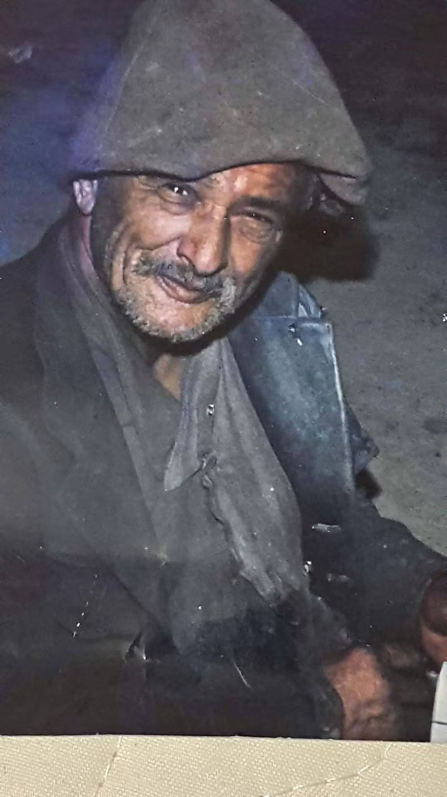

Le vagabond qui parlait aux étoiles
Sous sa capuche usée par le vent,
on devine un sourire venu d’ailleurs —
un éclat d’enfant resté vivant
au milieu des nuits sans chaleur.
Da Lachouchi, homme de poussière
et de lumière mêlées,
portait sur son dos l’univers
et les douleurs de nos années.
Dans ses poches dormaient
des outils cabossés, des miracles oubliés,
et ce fil de ficelle
qui reliait les cœurs éloignés.
Deux boîtes de chique suffisaient
pour franchir les mondes :
il parlait aux amants perdus,
aux morts silencieux,
à Jugurtha lui-même
quand la lune montait haut.
Avec son étrange téléphone,
il appelait les étoiles
comme on appelle un frère
à travers l’absence.
Et les astres, dit-on,
se penchaient pour l’écouter.
Sur la place du village,
il transperçait les journaux
comme on transperce le malheur :
un coup d’aiguille,
et l’occupant perdait un peu
de son ombre noire.
Nous, mômes des chemins secs,
nous tremblions d’un souffle nouveau,
celui qui grondait dans sa poitrine
comme la montagne lorsqu’elle refuse
d’abandonner son peuple.
Sous la crasse,
nous voyions briller
l’or de sa bonté,
le diamant de sa folie douce.
Lui, le vagabond des étoiles,
nous apprenait à croire
en l’impossible,
à tendre l’oreille vers l’invisible,
à espérer encore
quand il ne restait plus rien.
Aujourd’hui,
il marche ailleurs,
libre dans les sentiers
de notre mémoire.
Mais parfois,
au détour d’un rêve,
on entend sa voix bricolée
sur la ficelle du temps —
et l’on jurerait
qu’il parle encore aux étoiles
pour nous.
Djamel Metref
At Yenni le 21 Novembre 2025

← Tous les poèmes